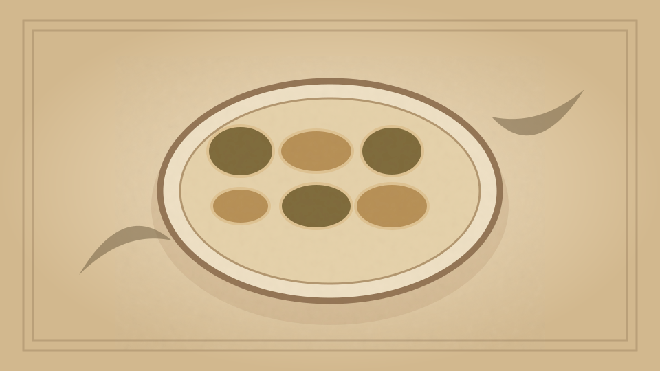

1910 · Fannie Merritt Farmer · BREAD AND BREAD MAKING
Yeast
The Boston Cooking-School Cook Book

Historical Recipe
The following text is extracted from the 1910 edition, retaining historical terminology and quantities.
Original Ingredients & Directions
Yeast is a microscopic plant of fungous growth, and is the lowest form of vegetable life. It consists of spores, or germs, found floating in air, and belongs to a family of which there are many species. These spores grow by budding and division, and multiply very rapidly under favorable conditions, and produce fermentation.
Fermentation is the process by which, under influence of air, warmth, moisture, and some ferment, sugar (or dextrose, starch converted into sugar) is changed into alcohol (C 2 H 5 HO) and carbon dioxide (CO 2 ). The product of all fermentation is the same. Three kinds are considered,—alcoholic, acetic, and lactic. Where bread dough is allowed to ferment by addition of yeast, the fermentation is alcoholic ; where alcoholic fermentation continues too long, acetic fermentation sets in, which is a continuation of alcoholic. Lactic fermentation is fermentation which takes place when milk sours.
Liquid, dry, or compressed yeast may be used for raising bread. The compressed yeast cakes done up in tinfoil have long proved satisfactory, and are now almost universally used, having replaced the home-made liquid yeast. 50 Never use a yeast cake unless perfectly fresh, which may be determined by its light color and absence of dark streaks.
The yeast plant is killed at 212° F.; life is suspended, but not entirely destroyed, 32° F. The temperature best suited for its growth is from 65° to 68° F. The most favorable conditions for the growth of yeast are a warm, moist, sweet, nitrogenous soil. These must be especially considered in bread making.
Automatically extracted transcription; editorial verification pending. Historical instructions may not meet modern food-safety standards.